Next: Geometry optimization
Up: Localized Molecular Orbital
Previous: Density Matrix Construction
Energy terms arise from pairs of atoms which are separated by distances greater
than the cutoff distance. These terms are purely electrostatic in origin:
their magnitude is simply proportional to the net charge, QA, on the atoms
involved. Net charge is defined as
QA = ZA-NeA
where NeA is the total electron population on atom A
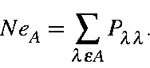
From simple electrostatics, the overall effect of these net charges is to
contribute a long-range energy term, Elre to the energy of the system
thusly
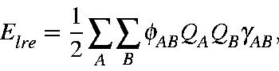
where fAB
is 1 if RAB is greater than the
cutoff distance but
0 otherwise, and
gAB
is the
<ss|1/RAB|ss> integral.
This simple description must be modified because of the effect of net
charges on the electron density. Each distant net positive charge will induce
a small, but in general not negligible, stabilizing effect on the electron
distribution, while a distant net negative charge will have the opposite
effect. This can be expressed formally in terms of the Fock matrix
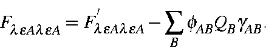
The effect on the nuclear term is similar, but opposite in sign:
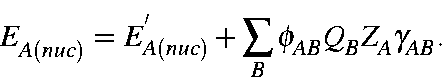
The total energy is given by the sum of the electronic plus nuclear energies.
Given that the electronic energy is
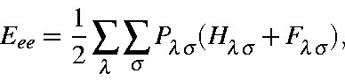
the electronic term due to distant nuclei is
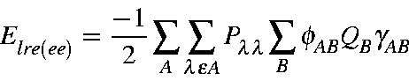
or
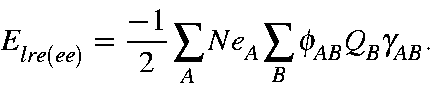
Likewise, given that the nuclear energy is
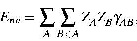
the nuclear energy term due to distant nuclei is
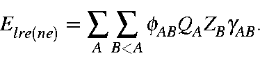
This can be re-written in a more symmetric form as
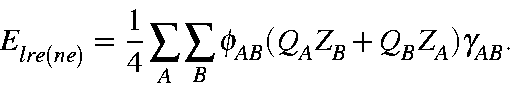
Together, the total contribution due to the electronic and nuclear terms
arising from distant atoms is
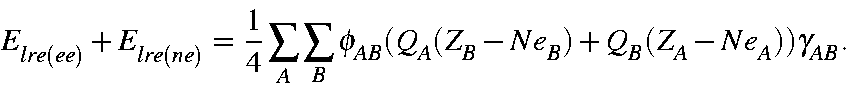
Rearranging gives
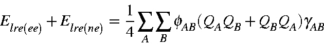
or
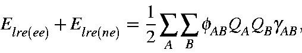
which is identical to the simple equation this discussion began with.
In the 1996 version of MOZYME, this sum was calculated explicitly. However,
evaluation of the sum can be avoided by adding into the one-electron matrix
the electrostatic stabilization terms arising from atoms beyond
CUTOF2. This concisely and effectively takes into account the
quantities just discussed.
Although the point-charge electrostatic effects are important, they are not the
only long-range effect. The effect of a point-charge on a lone pair of
electrons is also significant. Consider a lone pair on an atom pointing in the
direction of a positive charge. Clearly this will lead to a stabilizing
effect. A lone pair pointing in the opposite direction will be destabilized.
Similarly, a lone pair pointing at 90 to a charge will be subjected
to a torque. In order to include these effects in the Hamiltonian some extra
terms are needed.
to a charge will be subjected
to a torque. In order to include these effects in the Hamiltonian some extra
terms are needed.
The size of a lone pair on an atom is represented in the density matrix by the
value of the associated s-p terms. For each atom, there are three such
terms: Pspx, Pspy, and Pspz. The effect of distant charges
on Fspx is given by
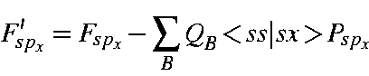\!P_{sp_x}
\end{displaymath}">
Similar terms exists for Fspy and Fspz.
Next: Geometry optimization
Up: Localized Molecular Orbital
Previous: Density Matrix Construction
J. J. P. Stewart
Fujitsu Ltd. 2001